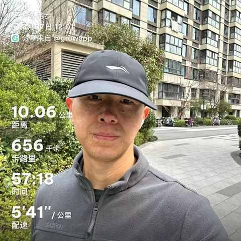
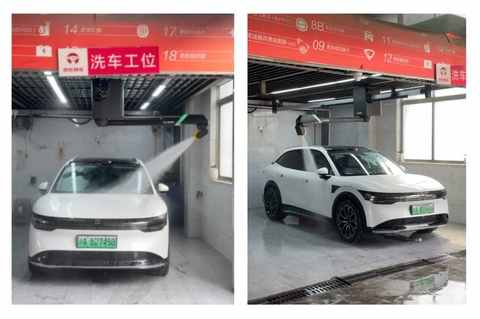
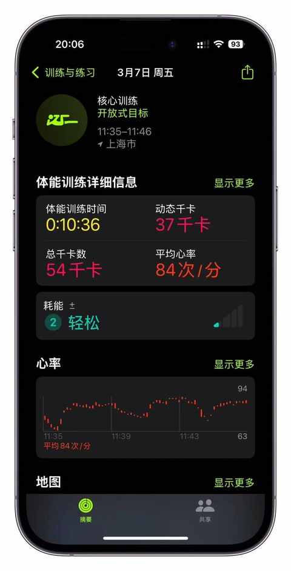
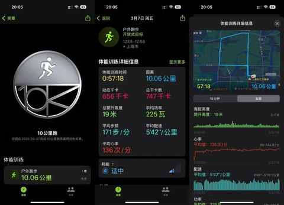
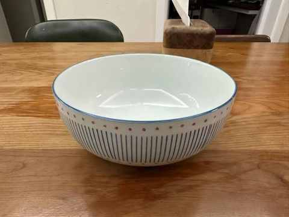
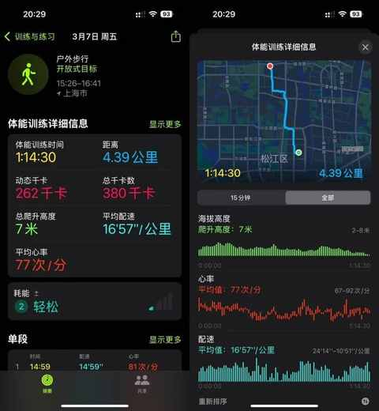
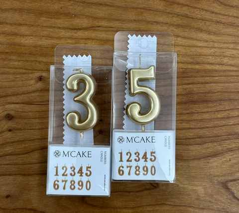
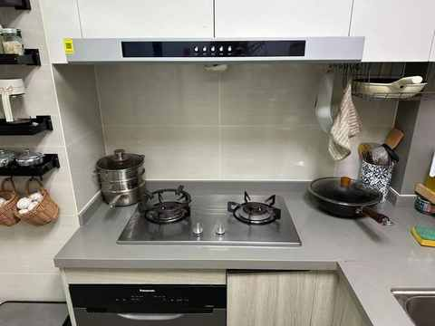
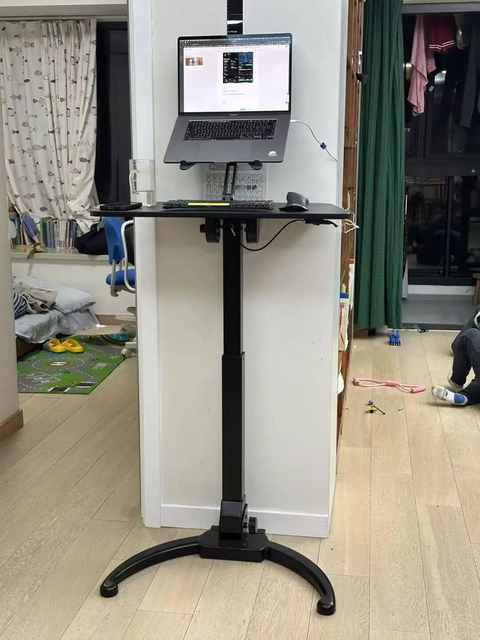

35 岁第一天，一个非典型中年家庭主夫的周五流水账
虽 挺久 不上班，但周五依然会是较为放松的一天，包括但不限于：早上不用炒菜、放学早、不用辅导作业……
2025 年 3 月 7 日周五，阴历二月初八，与其他周五不一样的是：今天是我正式迈入 35 岁的日子。

35 岁的第一个 10km
用流水账的形式了来记录，一个 35 岁的 普通中年朴实无华的一天。
6 点 20 分左右
在次卧的儿子喊爸爸，让我起来做饭，也不知道为啥起这么早
被喊醒之后，和他说再睡一会儿，我等闹钟响之后再起床做饭
6 点 45 分
准备早饭：7 个蒸饺、1 根红薯、2 个鸡蛋，一个双层的蒸锅搞定。
7 点 5 分
把早饭端上桌，喊儿子吃，自己去刷牙、洗脸、穿衣服。
7 点 20 分
把需要退货的快递放到门口
带好书包和饭盒，坐电梯去地下车库开车去学校
7 点 40 分
抵达学校附近停车场，停好车之后再步行 200m 去学校
7 点 50 分
在免费时间范围内，出停车场，开车回家
8 点 5 分
到家
8 点 10 分
收拾厨房、 烧开水 、泡咖啡、刷手机……
准备和老婆的早饭，今天吃的比较简单，预制的为主：新疆烤馕 、青团 、卤牛肉、水煮蛋、牛奶
9 点 20 分
和老婆一起吃早饭
9 点 42 分
送老婆上班，她没有迟到，10 点上班，9 点 59 分成功 打上卡
10 点 15 分
返程换了路线，路过京东养车店，想想有两个多月没洗车且最近都是晴天，临时决定去洗个车。

第一次见这种半自动洗车机，靠近观察之后发现喷水的位置上方有一枚摄像头，对不同车型的兼容做的挺好。
11 点 3 分
再次回到家
收拾餐桌、厨房、垃圾
11 点 35 分
核心训练：每组 3 个动作，完成 3 组

11 点 51 分
出门丢垃圾，又又又又又遇到熟悉的快递员
跑步 10km，依然是常跑的路线，温度适宜，风不大

13 点 5 分
跑后拉伸：四个动作，每个动作 2 分钟（单次 1 分钟）
13 点 22 分
做午饭：大白菜炒鸡腿肉
13 点 50 分
吃午饭，边看B 站边吃，就这样一大盆，居然都给我吃完咯

甚至吃完之后还吃了一个苹果，果然肚子就有点胀
下次必须要换一个小点的盘子盛菜
14 点 57 分
出发去学校，今天 提前一小时，也就是 15 点 20 分放学
比之前出发的时候晚了点，在小区门口扫了一个美团单车
15 点 16 分
再次抵达学校门口
15 点 26 分
接到儿子，一起步行回家
路途中儿子的消耗为：
- 纯牛奶 200ml * 1
- 牛肉干 * 1
- 小面包 * 1
- 蜜雪冰城原味冰淇淋 * 1
再次路过能捡到树枝的那条路，不过今天下午没有捡到满意的树枝，一路走一路换一路扔。
16 点 41 分
历时 74 分钟，又又又到家咯

17 点 20 分
做晚饭：煮饺子 + 金针菇炒蛋 + 西兰花
与此同时，儿子在旁边玩每周只能玩30分钟的植物大战僵尸
17 点 50 分
和儿子一起吃晚饭
18 点 15 分
洗碗、清理灶台、收拾厨房
把老婆给我买的蛋糕收到冰箱

18 点 30 分
碗洗好 + 厨房收拾妥当

18 点 37 分
邻居小朋友过来玩
把升降桌支起来，站着开始写今天的文章
